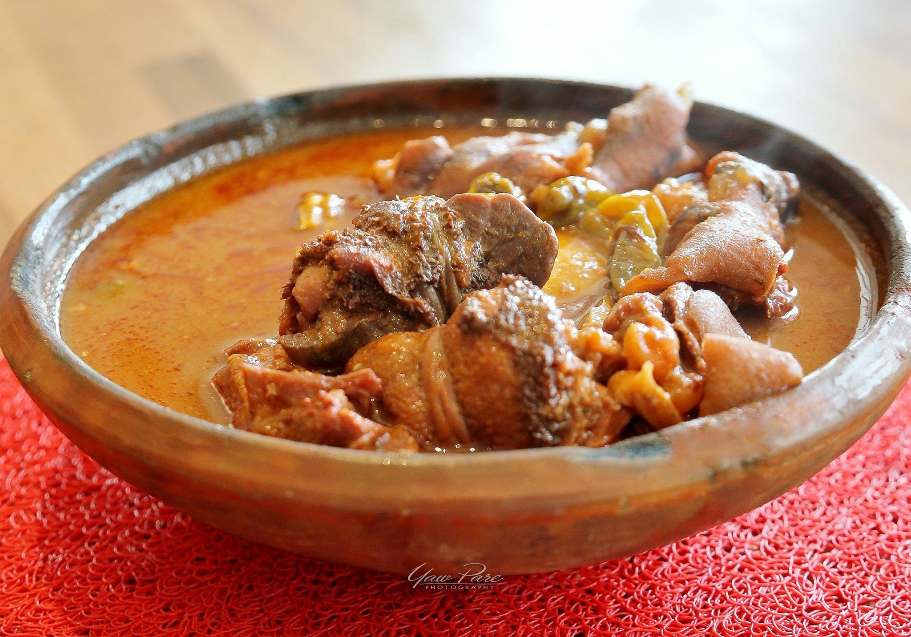

Groundnut Soup

Ingredients
- Cup groundnut paste
- 4 pieces medium-sized tomatoes
- 4 tbsp tomato paste
- 1 pound meat(chicken, beef, fish)
- 2 litres water
- 3 tbsp salt
- 5 pieces red pepper
- Spices
Instructions
- Wash meat thoroughly, chop and place into a clean cooking pot
- Add seasonings and mixture with your hands thoroughly
- Place over low heat and allow to steam for about 10 minutes
- Turn the steaming mixture from time to time
- Pour the groundnut paste into a clean bowl and add little amount of water
- Mix with your hands and ensure you obtain a uniform consistency
- Add more paste of you want a thicker mixture
- Simmer for about 5 - 10 minutes
- Wash onions and fresh tomatoes and add to the mixture
- Once the tomatoes and onions have boiled for a while, remove them and blend
- Pour the blended back into the stock
- Stir thoroughly
- Allow to cook for 8 minutes
- Add salt to taste
Return to Top
Return to Homepage